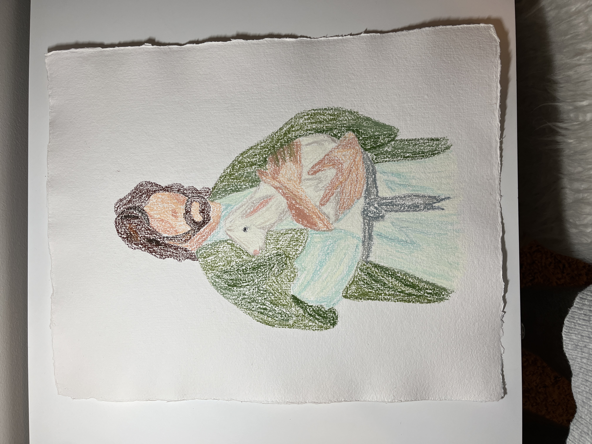

The Face of Christ by Sydney Astle
- Facts about this piece of art
- This is made out of oil pastels
- The original outline of Christ was traced
- I spent about 5 hours on this one piece
- This piece reminds me the Christ will always comfort us in times of need
- Inspiration behind it
- I have always wanted to draw who Christ is to me
- The first thing I did was study all the names of Christ and landed on "The Good Shepherd"
- I picture myself as the sheep in Christ's arms who he is comforting
The 6 Best Techniques Using Oil Pastel
I found this graph to be interesting to me as an artist. It shows how much each painting sold for per artist.